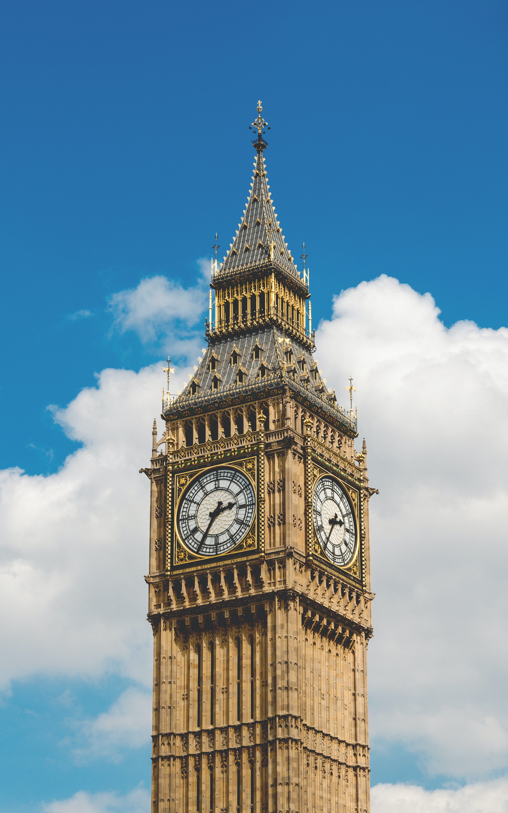

Là một trong hai biểu tượng đặc trưng cho thủ đô London nhưng ít ai biết được tên đầy đủ và chính xác của tháp đồng hồ này. Thực ra, Big Ben chỉ là tên gọi của chiếc chuông nặng nhất 13,5 tấn trong 5 cái chuông được đặt bên trong của tháp đồng hồ này mà thôi. Trước năm 2012, tháp đồng hồ Big Ben có tên đầy đủ là Tháp đồng hồ của cung điện Westminster – một cấu trúc tháp đồng hồ ở mặt Đông-Bắc của công trình Nhà quốc hội ở Westminster, London. Vào ngày diễu binh mừng 60 năm trị vì của Nữ hoàng Elizabeth II, Quốc hội Anh đã tuyên bố tháp đồng hồ Big Ben sẽ được đổi tên thành Tháp Elizabeth kể từ ngày 4 tháng 6 năm 2012. Mặc dù đã được đổi tên, nhưng có lẽ cái tên Tháp đồng hồ Big Ben vẫn là cái tên phổ biến nhất, được du khách ở khắp nơi trên thế giới khi nhớ về London là nhớ đến Tháp đồng hồ Big Ben.
Tháp đồng hồ Big Ben được thiết kế theo phong cách Victorian Gothic với chiều cao là 96,3m. Tổng thể cấu trúc của tháp được chia làm hai phần. Thiết kế 61 m đầu tiên của kết cấu là tháp đồng hồ Big Ben, bao gồm gạch xây phủ đá; phần còn lại chiều cao của tháp là cơ cấu hình chóp bằng gang. Móng rộng 15x15 m, bê tông dày 3 m, sâu 7 m dưới đất. Tháp đồng hồ Big Ben có tổng trọng lượng tháp là 9553 tấn. Bốn mặt đồng hồ cao 55 m trên mặt đất. Do điều kiện nền đất kể từ khi được xây dựng đến nay, tháp hơi nghiêng về phía Tây-Bắc, khoảng 220 mm.
Trong hai năm chiến tranh thế giới thứ nhất, những chiếc chuông đã bị im lặng và các mặt đồng hồ không được chiếu sáng ban đêm để tránh tấn công tàu Zeppelin của Đức. Các mặt đồng hồ đã trở nên đen tối vào tháng 9 năm 1939 khi những chiếc máy bay của Đức bắt đầu cuộc chiến chớp nhoáng trong Thế chiến II. Trong cuộc chiến tranh thế giới thứ 2, cung điện Westminster đã bị trúng bom do người Đức oanh tạc, phá hủy nhà khách của cung điện và gây hư hại tới mặt phía Tây của chiếc đồng hồ.
Bất chấp những thăng trầm, biến thiên của lịch sử, ngày nay, đồng hồ Big Ben vẫn đứng vững và trung thành với nhiệm vụ đổ chuông mỗi giờ. Cũng từ những sự kiện lịch sử này, người dân London và cả nước Anh, đã quen dần với việc chờ đón tiếng chuông trong mỗi đêm giao thừa, và các ngày lễ của nước Anh.
Tiếng chuông của đồng hồ Big Ben được dùng làm nhạc hiệu của đài BBC chính thức vào ngày 17/02/1924.
Big Ben bị nghiêng về hướng Tây Bắc theo một góc 0, 26 độ. Theo tính toán, phải mất khoảng 10.000 năm nữa thì Big Ben mới có độ nghiêng như tháp nghiêng Pisa của Italy.
Tính đến hiện tại, Big Ben đã 157 tuổi, đổ chuông 15 phút/lần và phát ra những tiếng "bong" khi điểm đúng giờ.
Big Ben ngừng đổ chuông trong 2 năm khi xảy ra chiến tranh thế giới thứ nhất.
Theo ước tính, nếu Big Ben được xây dựng vào thời điểm hiện nay thì chi phí sẽ vào khoảng 222.000 USD (tương đương khoảng gần 5 tỷ VNĐ).